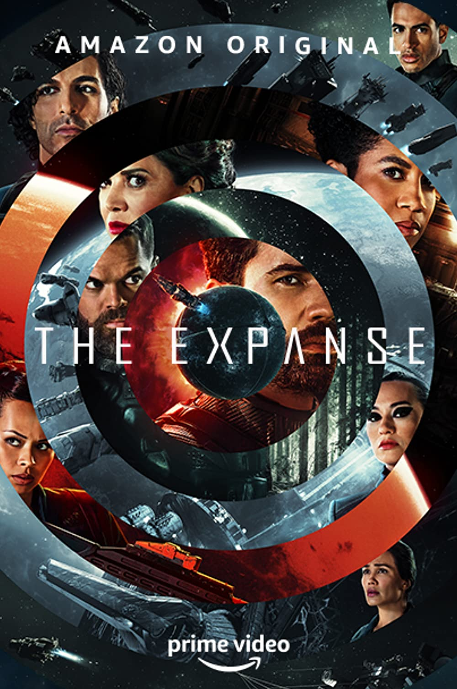
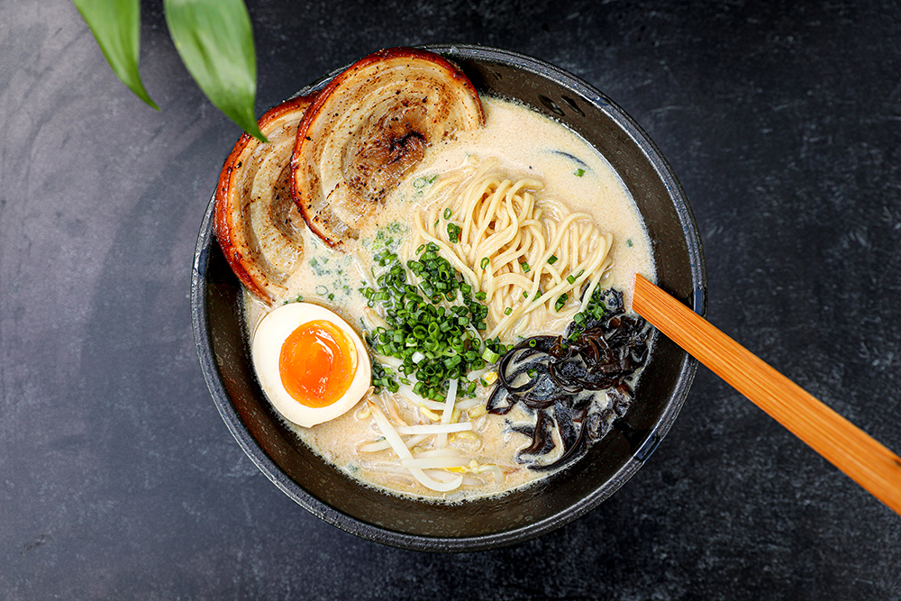
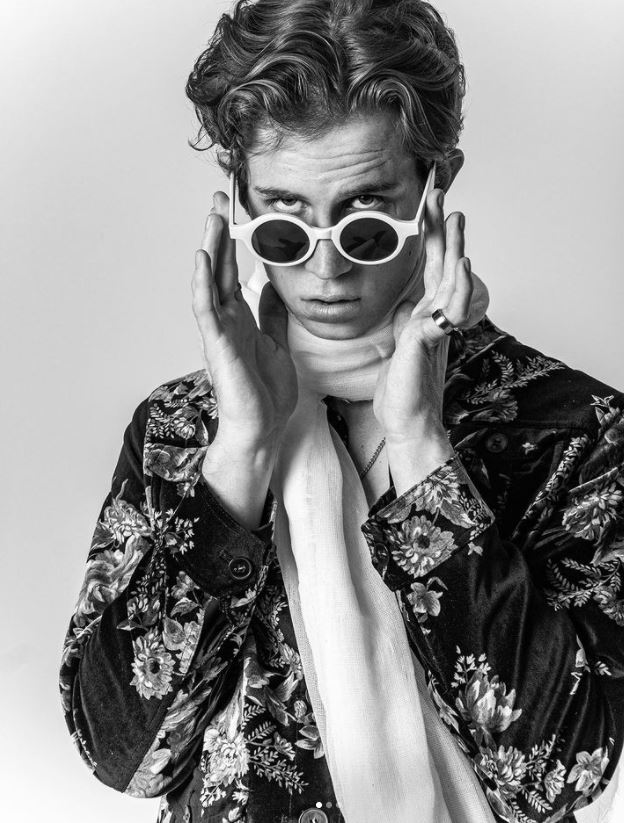
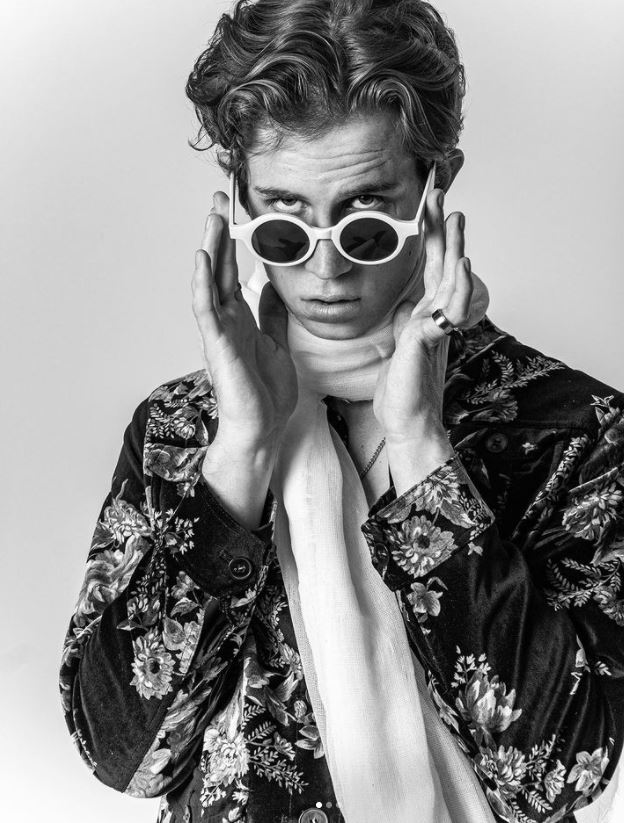

Hello World!
Griffin's Obligitory Website
This is my personal website made for Flatiron School.
My grasp on the content feels tenuous at best.
Hopes for the program
- Success.
- Not becoming overwhelmed.
- Maintaining a healthy sleep schedule.
- Not needing a webcam.
- Gaining valuable information that will help with my career change.
- Making new friends and pleasant aquaintances.
About Me
My name is Griffin Dolan. I live in Brooklyn. About a year or so before COVID I moved back to NYC.
It was a leap of faith. A leap because I was moving away from my home city. Of faith because I didn't have a job lined up.
It was pretty disheartening to recive zero help from the "family friends" I was introduced to. One of them saying, in about as many words,
that who I was related to was their favorite thing about me. I ended up reaching out to someone who was mentioned more in passing than anything else.
After being more persistant than I am really comfortable with, I convinced him to give me a job at his studio. Out of all the people I was connected with,
he was the only one that seemed like a genuinely good person. He was and is a great person and it was great while it lasted.
He doesn't know this, but for a while I looked at him as a sort of older brother figure. Truly greatful.
A year or two before I moved back to NYC, I got a computer. Initially, it was to stay in touch with close friends.
Staying in touch quickly became just one of the perks of working with computers. When I was tasked with recovering photos from
the old family PC, I used that oportunity to take the whole thing apart. A very interesting experience. I began to look at computers differently.
A general interest became something more in the wake of COVID. No work. Studios closed. Concerts and tours canceled. All I had was this computer.
How could I survive in that world? Just need to adapt, I guess. The rules changed and I am grateful for that as well.
Favorite things


 
